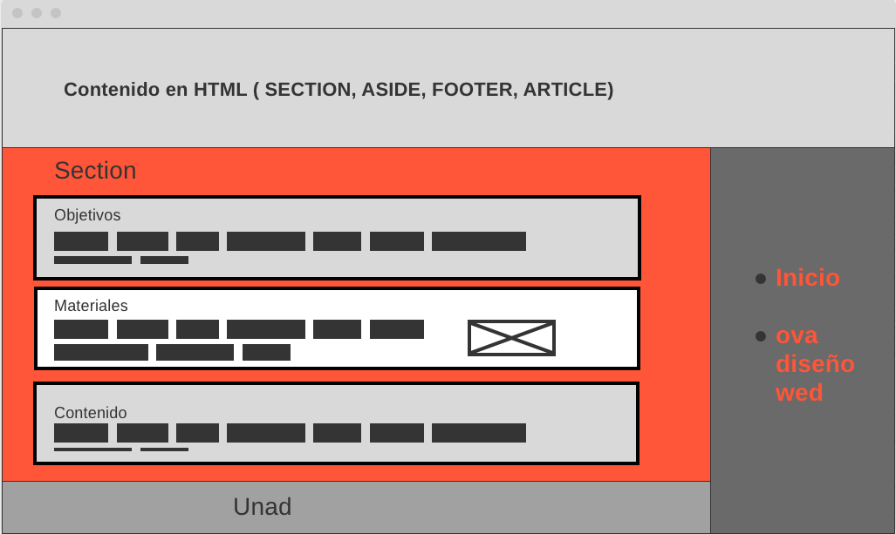

Al crear un sitio web tenemos que tener en cuenta las partes que lo Conforma ests son :
Section - este bloque se contiene la mayor parte del contenido expuesto en toda la pagina
Aside - se suele incluir link o articulos de otros sitios web que esten relacionados
footer - Es la parte inferior de la página, que generalmente contiene la letra pequeña,
el copyright o la información de contacto.
Article - son los diferentes parrofos que contiene el section o contenido principal

Maquetacion del sitio web:
